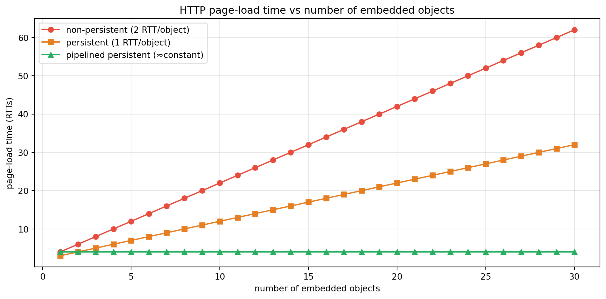

flowchart TD
A["Application message<br/>(HTTP request)"] --> B["Transport segment<br/>(+ TCP/UDP header)"]
B --> C["Network datagram<br/>(+ IP header)"]
C --> D["Link frame<br/>(+ Ethernet header/trailer)"]
D --> E["Physical bits on the medium"]
E --> F["Link frame<br/>strip link header"]
F --> G["Network datagram<br/>strip IP header"]
G --> H["Transport segment<br/>strip TCP/UDP header"]
H --> I["Application message"]
Computer Networking: A Top-Down Approach, Part 1 — Foundations and the Application Layer
The Internet’s edge and core, packet switching, the four sources of delay, protocol layering, and then the application layer from HTTP/2/3 and cookies to DNS, email, P2P, CDNs, and sockets — following Kurose & Ross, Chapters 1–2
Computer Science
Networking
Internet
Protocols
Application Layer
HTTP
DNS
TCP/IP
Distributed Systems
A first-principles, top-down introduction to computer networking following Kurose and Ross. Starting at the application layer and descending, it covers what the Internet is, the network edge and core, packet versus circuit switching, store-and-forward and queueing, the four components of nodal delay, traffic intensity, throughput and the bottleneck link, protocol layering and encapsulation, and network security threats; then the application layer in depth: application architectures, sockets, HTTP/1.1 with persistent connections and pipelining, cookies, web caching and conditional GET, HTTP/2 and HTTP/3 over QUIC, electronic mail (SMTP, POP3, IMAP), DNS hierarchy and resource records, peer-to-peer file distribution and BitTorrent, content delivery networks and video streaming, and socket programming, with an executable Python laboratory modeling end-to-end delay and HTTP page-load timing.
The top-down approach starts where you already stand — with the applications you use every day — and descends through the layers that make them work. It is the reverse of the traditional bottom-up curriculum, and it is far more motivating: every abstraction is introduced because a real application needs it.
This is Part 1 of a three-part series following Kurose & Ross, Computer Networking: A Top-Down Approach. Here we cover Chapter 1 (Computer Networks and the Internet) and Chapter 2 (The Application Layer). Part 2 takes the Transport Layer, and Part 3 the Network Layer’s data and control planes.
TipThe Series
- Part 1 — Foundations and the Application Layer (this article)
- Part 2 — The Transport Layer
- Part 3 — The Network Layer: Data Plane and Control Plane
0.1 Companion Reading
1 What Is the Internet, and What Is a Protocol?
The Internet can be described two ways, and both matter.
Nuts-and-bolts view. The Internet is a global network of billions of connected computing devices (“hosts” or “end systems”) — laptops, phones, servers, IoT sensors — linked by communication links (fiber, copper, radio, satellite) and packet switches (routers and switches). Hosts and switches are end points and intermediate nodes; links have a transmission rate measured in bits per second. Packets traverse a route through the network. End systems connect via Internet Service Providers (ISPs), which themselves interconnect.
Service view. The Internet is an infrastructure that provides services to distributed applications: the Web, email, streaming, messaging, video calls, and the API we call “the Internet.” Applications run on end systems, not on the routers in the core. This separation is the single most important architectural fact about the Internet: the core moves packets; the edge runs applications.
A protocol defines the format and order of messages exchanged between communicating entities, and the actions taken on transmission and receipt. Human protocol (“Hi” → “Hi” → “What time is it?” → time) and computer protocol are the same idea with stricter rules. Protocols are what make heterogeneous hardware interoperate; they are implemented in software on hosts and routers, and they are standardized so that no single vendor controls the network.
2 The Network Edge
The edge is where applications live. End systems are called hosts because they host (run) application programs.
2.1 Access Networks
Access networks connect end systems to the first router (the “edge router”):
| Access technology | Typical downstream | Medium | Notes |
|---|---|---|---|
| DSL | 10–100 Mbps | existing phone twisted pair | dedicated line to DSLAM, FDM over voice band |
| Cable (DOCSIS) | 100–1000 Mbps | coax (HFC) | shared among neighbors; FDM channels |
| FTTH (PON) | 100 Mbps – 1 Gbps+ | fiber | passive optical splitters to the OLT |
| 5G / LTE | 50–300 Mbps | licensed radio | shared air interface, base station |
| Wi-Fi (802.11) | 100 Mbps – 1 Gbps | unlicensed radio | shared, short range, to a wireless AP |
| Enterprise / datacenter | 1–100 Gbps | fiber/copper | switched Ethernet |
Two properties recur: shared versus dedicated media, and symmetry versus asymmetry (download usually exceeds upload). Shared media introduce contention: aggregate access capacity is divided among active users.
2.2 Physical Media
Bits travel as electromagnetic waves or optical pulses:
- Twisted pair — cheap, ubiquitous; increasingly high rates over short runs.
- Coaxial cable — better shielding, higher rates, used in cable access.
- Optical fiber — very high rates, low attenuation, immune to EMI; backbone and FTTH.
- Radio — terrestrial (Wi-Fi, cellular), satellite (geostationary vs low-Earth-orbit), and free-space optics.
3 The Network Core
The core is a mesh of packet switches and links connecting the edge.
3.1 Packet Switching vs Circuit Switching
Circuit switching reserves a dedicated path for the duration of a call. Classic telephone networks did this; if the circuit allocates a fixed rate, idle capacity is wasted.
Packet switching breaks messages into packets that share links on demand, each packet using the full link rate while being transmitted. Packets queue at switches and may wait; capacity is multiplexed statistically, which is why it is statistically efficient but subject to congestion.
A worked comparison from the book: two users each transmitting 1 Mbps, active 10% of the time, over a 2 Mbps link. With circuit switching, each user must receive a reserved 1 Mbps, so at most two users fit. With packet switching and the same 2 Mbps, many more users can share, and the probability that more than two are simultaneously active is small — so statistical multiplexing admits far more users at low blocking probability, at the cost of occasional queueing. The gain is the trade of a hard guarantee for a high-probability one.
3.2 Store-and-Forward and Queueing
A store-and-forward switch must receive the entire packet before forwarding it — it stores the bits, checks the header, looks up the destination, then transmits. For a packet of \(L\) bits over a link of rate \(R\), the transmission delay is \(L/R\). Across \(N\) links between source and destination, the end-to-end store-and-forward transmission delay is:
\[ d_{\text{trans, e2e}} = N \cdot \frac{L}{R} \]
(assuming no propagation or processing delay). Switches maintain output queues for each outgoing link; if arrival rate exceeds output link rate, queues grow, and eventually packets are dropped (lost).
3.3 The Network Structure: A Network of Networks
No single ISP spans the globe; the Internet is a hierarchy of ISPs: access ISPs → regional ISPs → tier-1 ISPs (backbone), plus content-provider networks (Google, Netflix, Cloudflare) and Internet Exchange Points (IXPs) where networks peer and exchange traffic without paying transit fees. This hierarchy is economic and negotiated as much as technical.
4 Performance: Delay, Loss, and Throughput
The four nodal delays at a router are the heart of network performance:
\[ d_{\text{nodal}} = d_{\text{proc}} + d_{\text{queue}} + d_{\text{trans}} + d_{\text{prop}} \]
| Component | Symbol | Formula / cause |
|---|---|---|
| Processing | \(d_{\text{proc}}\) | header inspection, routing lookup, error check |
| Queueing | \(d_{\text{queue}}\) | waiting for the output link |
| Transmission | \(d_{\text{trans}} = L/R\) | pushing all \(L\) bits onto the link |
| Propagation | \(d_{\text{prop}} = d/s\) | travel of one bit through the medium |
Here \(L\) is packet length (bits), \(R\) link rate (bps), \(d\) physical distance, and \(s\) propagation speed (\(\approx 2\)–\(3\times10^8\) m/s). Note the distinction: transmission delay depends on packet size and link rate; propagation delay depends on distance and medium.
4.1 Traffic Intensity and Loss
Let \(a\) be the average packet arrival rate (packets/s) and \(L\) the packet length; the traffic intensity is:
\[ \rho = \frac{La}{R} \]
- \(\rho \approx 0\): little queueing.
- \(\rho \to 1\): queueing delay grows rapidly and without bound.
- \(\rho > 1\): arrival work exceeds link capacity; the queue grows indefinitely and packets are dropped.
Real queues are finite, so packets are lost when the buffer overflows. Lost packets may be retransmitted by higher layers (transport), or dropped permanently (some real-time traffic).
4.2 Throughput
Throughput is the rate at which bits are delivered. For a path with links of rates \(R_1,\dots,R_N\), the bottleneck link is the minimum, and end-to-end throughput is:
\[ \text{throughput} = \min\{R_1, R_2, \dots, R_N\} \]
This is why adding bandwidth in the middle rarely helps if the access link is the bottleneck — a fact that shapes everything from CDN placement to home-router shopping.
5 Protocol Layers and the Internet Stack
Layering decomposes the complexity of the network into manageable pieces, each with a defined service interface.
| Layer | Function | Example protocols |
|---|---|---|
| Application | network applications | HTTP, SMTP, DNS, QUIC |
| Transport | process-to-process data transfer | TCP, UDP |
| Network | routing and forwarding of datagrams | IP, ICMP, routing protocols |
| Link | data transfer on a single link | Ethernet, Wi-Fi, PPP |
| Physical | bits on the wire | modulation, coding |
The OSI reference model additionally inserts Presentation and Session between application and transport; the Internet stack collapses those into the application layer. Each layer provides services to the layer above and uses the layer below. When a message is sent, each layer encapsulates the data: the application data becomes a transport segment (with transport header), then a network datagram (with IP header), then a link frame (with link header/trailer), and finally bits on the medium. At the receiver, headers are stripped in reverse — decapsulation.
Layering has costs (duplicated functionality, header overhead) but enormous benefits: independent evolution, modular design, and interoperability across vendors.
5.1 Networks Under Attack
Security is a first-class networking concern, not an afterthought:
- Malware — viruses, worms, botnets that recruit compromised hosts.
- Denial of Service (DoS/DDoS) — flood a target (vulnerability, bandwidth, or connection-flooding attacks), often from a botnet or via reflection.
- Packet sniffing — passive capture on shared/broadcast media (Wi-Fi) or compromised links.
- IP spoofing — forging source addresses to hide origin or reflect traffic.
- Man-in-the-middle — interception and modification of traffic.
The defenses — encryption (TLS), authentication, ingress filtering, rate limiting, and CDN absorption — live across layers, which is precisely why security cannot be localized to one layer.
6 The Application Layer
We now begin the descent proper. The application layer is where network applications run and where the top-down approach starts.
6.1 Application Architectures
- Client–server. An always-on server with a fixed IP answers requests from many clients. Scalability requires datacenters and load balancing.
- Peer-to-peer (P2P). Arbitrary end systems communicate directly, with minimal reliance on dedicated servers. Self-scaling, but harder to manage and secure.
- Hybrid. Many systems mix the two: a central server for discovery and P2P for bulk transfer (BitTorrent’s tracker, early Napster).
6.2 Processes, Sockets, and Addressing
An application consists of processes running on hosts. A process sends/receives messages through a socket — the API boundary between application and transport. To direct a message, the sender must specify the destination IP address (host) and port number (which process on that host). A representative Web server listens on port 80 (HTTP) or 443 (HTTPS), while clients use ephemeral ports.
The application developer chooses the transport protocol by selecting a socket type:
| Requirement | TCP | UDP |
|---|---|---|
| Connection | connection-oriented | connectionless |
| Reliability | reliable, ordered byte stream | unreliable, unordered datagrams |
| Flow/congestion control | yes | no |
| Overhead | higher | lower |
| Typical uses | Web, email, file transfer | DNS, streaming, games, VoIP |
Application-layer protocols define the message syntax, semantics, and rules for when and how to send — the same definition as any protocol, now at the top of the stack.
7 The Web and HTTP
7.1 HTTP Basics
The HyperText Transfer Protocol (HTTP) is a request–response protocol. A client (browser) sends a request; a server responds. Two message types exist: request and response, both human-readable in HTTP/1.1.
GET /index.html HTTP/1.1
Host: www.example.com
Connection: close
User-Agent: Mozilla/5.0
Accept-Language: en-USHTTP/1.1 200 OK
Connection: close
Content-Type: text/html
Content-Length: 6821
<html>...Common methods: GET, POST, HEAD, PUT, DELETE. Common status codes: 200 OK, 301 Moved Permanently, 304 Not Modified, 400 Bad Request, 404 Not Found, 500 Internal Server Error. HTTP is stateless: the server retains no per-client memory — which is why cookies exist.
7.2 Persistent vs Non-Persistent Connections
- Non-persistent (HTTP/1.0 default): one TCP connection per object. Each object costs a TCP handshake (1 RTT) plus a request/response (1 RTT) ≈ 2 RTT, plus transmission.
- Persistent (HTTP/1.1 default): the connection stays open across objects, amortizing the handshake.
- Pipelining: send multiple requests without waiting for responses (limited in practice by head-of-line blocking).
7.4 Web Caching and Conditional GET
A proxy cache stores responses and serves them to later clients, reducing latency and backbone traffic. Caches validate freshness with conditional GET using If-Modified-Since; if unchanged, the server replies 304 Not Modified with no body.
7.5 HTTP/2 and HTTP/3
- HTTP/2 multiplexes many streams over one TCP connection, adds header compression (HPACK) and server push, and reduces head-of-line blocking at the application layer — though TCP-level head-of-line blocking remains.
- HTTP/3 runs over QUIC (a transport built on UDP), giving per-stream reliability and connection migration, eliminating TCP head-of-line blocking and reducing handshake latency. See Part 2 for QUIC’s transport design.
8 Electronic Mail and DNS
8.1 Email: SMTP, POP3, IMAP
Email uses several protocols: SMTP pushes messages from sender to recipient’s mail server (and between servers). The recipient retrieves mail with POP3 (download-and-delete style) or IMAP (server-side folders, synchronization across devices). SMTP is a “push” protocol with ASCII commands (HELO, MAIL FROM, RCPT TO, DATA, QUIT), while retrieval protocols are “pull.”
8.2 DNS: The Internet’s Directory
The Domain Name System (DNS) maps human names to IP addresses. It is a distributed, hierarchical database implemented in a global network of servers:
- Root servers (a–m) point to top-level domains.
- TLD servers (
.com,.org,.uk) point to authoritative servers. - Authoritative servers hold a domain’s records.
- Local/caching resolvers (your ISP’s or
8.8.8.8/1.1.1.1) do the recursion.
Common resource records: A (IPv4), AAAA (IPv6), CNAME (alias), MX (mail), NS (name server), TXT. Resolution is iterative (“Ask the root, then ask the TLD, then ask authoritative”) or recursive (the resolver does it all). Caching with a TTL makes DNS efficient. DNS uses UDP on port 53 for queries because it is fast and stateless.
DNS is also a security target: cache poisoning, DDoS amplification, and DNS spoofing motivate DNSSEC and encrypted DNS (DoH/DoT).
9 P2P, CDNs, and Video Streaming
9.1 Peer-to-Peer Distribution
In P2P, peers exchange content directly. The classic result (Kurose’s analysis) is that client–server distribution time grows linearly with the number of peers, while P2P distribution time stays bounded because each peer contributes upload capacity. This is why BitTorrent scales with popularity: tit-for-tat incentives and rarest-first piece selection yield fast, resilient distribution.
9.2 Content Delivery Networks
CDNs (Akamai, Cloudflare, Netflix’s Open Connect) place copies of content at many edge sites near users, reducing latency and backbone load. Netflix additionally uses adaptive streaming over HTTP with the DASH format and its own CDN.
9.3 Video Streaming
Streaming is application-layer but latency-sensitive: DASH stores video as chunks at multiple bitrates; the client measures throughput and picks the next chunk’s rate — an adaptive control loop that trades quality against rebuffering.
10 Socket Programming
A socket is the programming interface to the transport layer. The canonical flows:
sequenceDiagram
participant C as Client
participant S as Server
S->>S: socket(); bind(); listen()
C->>S: socket(); connect()
S->>S: accept() -> new socket
C->>S: send request bytes
S->>C: send response bytes
Note over C,S: TCP: connection-oriented, byte stream
With UDP, there is no handshake: the client simply sendto()s a datagram and the server recvfrom()s it. With TCP, connect()/accept() establish the connection, after which send()/recv() stream bytes. The application sees no packets — only a reliable (TCP) or best-effort (UDP) channel.
11 Laboratory: End-to-End Delay and HTTP Page-Load Timing
11.1 Nodal Delay and the Bottleneck Throughput
The first experiment computes the four delay components for a representative packet and shows the throughput bottleneck along a path.
Code
import numpy as np
# --- 1. Nodal delay components for one packet ---
L = 1500 * 8 # 1500-byte packet in bits
R = 100e6 # 100 Mbps link
d = 4000e3 # 4000 km distance
s = 2.0e8 # 2e8 m/s propagation speed
d_trans = L / R
d_prop = d / s
print("=== NODAL DELAY (1500 B packet, 100 Mbps, 4000 km fiber) ===")
print(f" transmission L/R : {d_trans*1e3:8.4f} ms")
print(f" propagation d/s : {d_prop*1e3:8.4f} ms")
print(f" transmission + propagation = {(d_trans+d_prop)*1e3:.4f} ms")
# --- 2. Traffic intensity and queueing blow-up (M/M/1 queueing delay) ---
print("\n=== TRAFFIC INTENSITY AND M/M/1 QUEUEING DELAY ===")
Lpkt = 1500 * 8
Rlink = 1e6
for rho in [0.2, 0.5, 0.8, 0.9, 0.95, 0.99]:
a = rho * Rlink / Lpkt # arrival rate consistent with rho
# mean queueing delay for M/M/1: dq = (rho/R) / (1 - rho) * L ... using service time
service = Lpkt / Rlink
dq = rho / (1 - rho) * service
print(f" rho={rho:4.2f} -> arrival {a:7.0f} pkt/s, queueing delay {dq*1e3:9.3f} ms")
# --- 3. Bottleneck throughput along a path ---
print("\n=== BOTTLENECK THROUGHPUT ===")
path = {"home Wi-Fi": 300e6, "access ISP": 100e6, "regional": 10e9, "backbone": 100e9, "server": 1e9}
print(" links:", ", ".join(f"{k}={v/1e6:.0f}Mbps" for k, v in path.items()))
bottleneck = min(path, key=path.get)
print(f" bottleneck = {bottleneck} ({path[bottleneck]/1e6:.0f} Mbps)")
print(f" end-to-end throughput = {path[bottleneck]/1e6:.0f} Mbps (not the sum, the min)")=== NODAL DELAY (1500 B packet, 100 Mbps, 4000 km fiber) ===
transmission L/R : 0.1200 ms
propagation d/s : 20.0000 ms
transmission + propagation = 20.1200 ms
=== TRAFFIC INTENSITY AND M/M/1 QUEUEING DELAY ===
rho=0.20 -> arrival 17 pkt/s, queueing delay 3.000 ms
rho=0.50 -> arrival 42 pkt/s, queueing delay 12.000 ms
rho=0.80 -> arrival 67 pkt/s, queueing delay 48.000 ms
rho=0.90 -> arrival 75 pkt/s, queueing delay 108.000 ms
rho=0.95 -> arrival 79 pkt/s, queueing delay 228.000 ms
rho=0.99 -> arrival 82 pkt/s, queueing delay 1188.000 ms
=== BOTTLENECK THROUGHPUT ===
links: home Wi-Fi=300Mbps, access ISP=100Mbps, regional=10000Mbps, backbone=100000Mbps, server=1000Mbps
bottleneck = access ISP (100 Mbps)
end-to-end throughput = 100 Mbps (not the sum, the min)11.2 HTTP Page-Load Timing: Non-Persistent vs Persistent vs Pipelined
The second experiment quantifies how HTTP’s connection strategy changes page-load latency as the number of embedded objects grows.
Code
import numpy as np
import matplotlib.pyplot as plt
N = np.arange(1, 31) # number of embedded objects
# Base HTML page: 1 object. Then N embedded objects.
# Non-persistent: each object = 1 RTT handshake + 1 RTT request/response = 2 RTT
non_persistent = 2 * (1 + N)
# Persistent: 2 RTT for base (handshake + request/response), then 1 RTT per object
persistent = 2 + N
# Pipelined persistent: 2 RTT for base, then ~1 RTT for all pipelined objects (+1)
pipelined = 2 + 2 * np.ones_like(N)
fig, ax = plt.subplots(figsize=(10, 5))
ax.plot(N, non_persistent, 'o-', color="#e74c3c", label="non-persistent (2 RTT/object)")
ax.plot(N, persistent, 's-', color="#e67e22", label="persistent (1 RTT/object)")
ax.plot(N, pipelined, '^-', color="#27ae60", label="pipelined persistent (≈constant)")
ax.set_title("HTTP page-load time vs number of embedded objects")
ax.set_xlabel("number of embedded objects")
ax.set_ylabel("page-load time (RTTs)")
ax.grid(alpha=0.3); ax.legend()
plt.tight_layout()
plt.show()
print("=== PAGE LOAD TIME (RTTs) ===")
for n in [1, 5, 10, 20, 30]:
i = n - 1
print(f" objects={n:3d}: non-persistent={non_persistent[i]:3.0f} "
f"persistent={persistent[i]:3.0f} pipelined={pipelined[i]:2.0f}")
print("\n=== WORST-CASE NON-PERSISTENT DELAY FOR A 1 Gbps, 50 ms RTT LINK ===")
rtt = 50e-3
n = 20
objects = 1 + n
t = 2 * objects * rtt
print(f" {objects} objects x 2 RTT x {rtt*1e3:.0f} ms = {t*1e3:.0f} ms just in RTTs")
print(" (real browsers open parallel connections, cutting this substantially)")
=== PAGE LOAD TIME (RTTs) ===
objects= 1: non-persistent= 4 persistent= 3 pipelined= 4
objects= 5: non-persistent= 12 persistent= 7 pipelined= 4
objects= 10: non-persistent= 22 persistent= 12 pipelined= 4
objects= 20: non-persistent= 42 persistent= 22 pipelined= 4
objects= 30: non-persistent= 62 persistent= 32 pipelined= 4
=== WORST-CASE NON-PERSISTENT DELAY FOR A 1 Gbps, 50 ms RTT LINK ===
21 objects x 2 RTT x 50 ms = 2100 ms just in RTTs
(real browsers open parallel connections, cutting this substantially)The lab shows the core lesson of the application layer: protocol design choices at the application layer dominate user-perceived latency. HTTP/1.1’s persistent connections and HTTP/2/3’s multiplexing are not micro-optimizations; they change the slope of the curve.
12 Summary
\[ \begin{aligned} &\textbf{Internet: } && \text{edge runs applications, core moves packets; protocols define format and actions.} \\[3pt] &\textbf{Core: } && \text{packet switching multiplexes statistically; store-and-forward adds } N\cdot L/R. \\[3pt] &\textbf{Delay: } && d_{\text{nodal}} = d_{\text{proc}} + d_{\text{queue}} + d_{\text{trans}} + d_{\text{prop}};\quad \rho = La/R. \\[3pt] &\textbf{Throughput: } && \min(R_1,\dots,R_N) \text{ — the bottleneck link rules.} \\[3pt] &\textbf{Layering: } && \text{application, transport, network, link, physical; encapsulation all the way down.} \\[3pt] &\textbf{Applications: } && \text{HTTP (persistent, caching, cookies), DNS, SMTP/IMAP, P2P, CDNs, sockets.} \end{aligned} \]
The application layer is where the user meets the network, and its protocols — HTTP, DNS, SMTP, and their peers — are the highest layer of the top-down story. Having seen what applications need (reliability, ordering, throughput, low latency), we descend in Part 2 to the transport layer, which is where those needs are actually met.
13 Curated References and Further Reading
- Kurose, J. & Ross, K. (2021). Computer Networking: A Top-Down Approach, 8th ed. Pearson. (Primary source: Chapters 1–2.)
- Berners-Lee, T., Fielding, R. & Frystyk, H. (1996). Hypertext Transfer Protocol — HTTP/1.0. RFC 1945.
- Fielding, R. et al. (1999/2014). HTTP/1.1. RFC 2616 / RFC 7230–7235.
- Belshe, M. et al. (2015). Hypertext Transfer Protocol Version 2 (HTTP/2). RFC 7540.
- Mockapetris, P. (1987). Domain Names — Concepts and Facilities. RFC 1034.
- Mockapetris, P. (2026/1987). Domain Names — Implementation and Specification. RFC 1035.
- Bishop, M. (2021). Computer Security: Art and Science, 2nd ed. Addison-Wesley. (Network threat models.)
- Cohen, B. (2003). Incentives Build Robustness in BitTorrent. Workshop on Economics of Peer-to-Peer Systems.
- rfc-editor.org and IANA registries. Authoritative protocol specifications and port assignments.